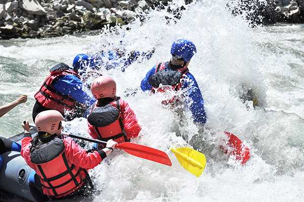
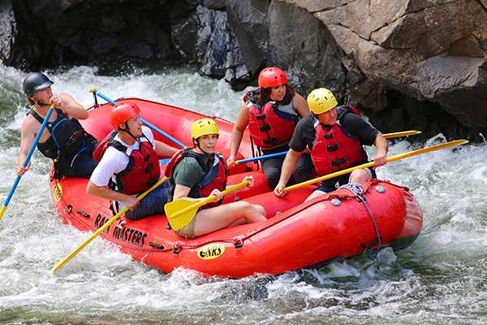
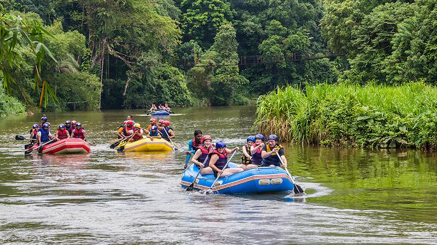

You can't miss these ones!

Dientes del Diablo is our most exciting trip, however is not recomended for beginers because the path tend to get a bit salvage in some parts

Big mallard is a road that still contain an incredible ride to enjoy with friends, and a special view of a duck-shaped rock near the end

Fast Splash is a fast and splashy road to take, enjoy this almost straight line full of speed recomendable for people with a bit of experience
| Dientes del diablo | Big Mallard | Half Day Adventure | Fast Splash | Slow Splash |
|---|---|---|---|---|
| As explained, this trip contain many curves at great speed, face the Devil's Teeths in this exciting adrenaline waiting for experienced people | Big Mallard is a trip full of good views to look at, with a medium speed nice to enjoy the nature with a rewarding | Half day Adventure is a long journey not recomended for everyone, have an unforgetable day in this 8 hours trip, don't worry, we cover the meal! | Fast Splash is a trip perfect if you want to start taking more advanced trips, test your skills in this semi-straight line full of high-speed waters | Slow Splash can be the the ideal option to begin with if you want to start on this sport, a calmed ride to start and don't forget that you'll be acompanied by experimented guides |